Taskdock
Single-host build and test job runner in Go. SQLite-backed queue with retries, bounded attempt logs, crash recovery, and Prometheus metrics — the same failure and scheduling problems as larger CI systems, kept deliberately small.
Go · SQLite · Linux

TimeTableGen
PyQt6 desktop app that generates full weekly timetables for ~27 secondary-school classes with a multi-pass constraint-satisfaction heuristic, then assigns teachers and surfaces staffing gaps visually.
Python · PyQt6 · Algorithms

ClipIt
Lightweight Linux clipboard manager in Qt/C++ bringing a Win+V-style history to Wayland, with bounded memory usage, pinned and editable entries, duplicate prevention, and emoji/kaomoji/symbol pickers in a tabbed popup. Packaged for Ubuntu testers.
C++ · Qt6 · Linux

See-My-Speech
Desktop audio transcription with OpenAI Whisper behind a PyQt interface for Linux and Windows. Core functionality, UI components, and worker threads keep the interface responsive through long transcription jobs.
Python · PyQt · Whisper

Farcade
Farcaster mini-game work: finished a doodle-jump-style contest game in Phaser, plus an original CSS/DOM version that runs entirely without canvas, after resolving rotation and frame-integration issues.
JavaScript · Phaser · CSS